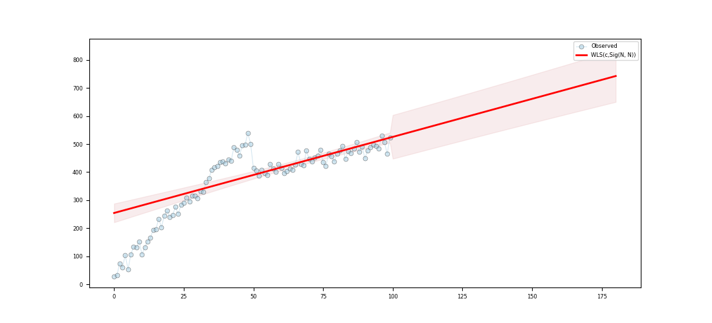

Note
Go to the end to download the full example code
Using weighted least squares (WLS)
Approximating a function using Weighted Least Squares (WLS)
c:\users\kelda\desktop\repositories\virtualenvs\venv-py391-pyamr\lib\site-packages\statsmodels\regression\linear_model.py:807: RuntimeWarning:
divide by zero encountered in log
Series:
wls-rsquared 0.5779
wls-rsquared_adj 0.5736
wls-fvalue 134.1544
wls-fprob 0.0
wls-aic inf
wls-bic inf
wls-llf -inf
wls-mse_model 195292.0736
wls-mse_resid 1455.7267
wls-mse_total 3413.6696
wls-const_coef 254.2846
wls-const_std 16.7907
wls-const_tvalue 15.1444
wls-const_tprob 0.0
wls-const_cil 220.964
wls-const_ciu 287.6052
wls-x1_coef 2.7125
wls-x1_std 0.2342
wls-x1_tvalue 11.5825
wls-x1_tprob 0.0
wls-x1_cil 2.2478
wls-x1_ciu 3.1773
wls-s_dw 0.421
wls-s_jb_value 3.943
wls-s_jb_prob 0.139
wls-s_skew 0.315
wls-s_kurtosis 3.74
wls-s_omnibus_value 4.322
wls-s_omnibus_prob 0.115
wls-m_dw 0.1172
wls-m_jb_value 8.1659
wls-m_jb_prob 0.0169
wls-m_skew -0.622
wls-m_kurtosis 3.6422
wls-m_nm_value 8.4851
wls-m_nm_prob 0.0144
wls-m_ks_value 0.6487
wls-m_ks_prob 0.0
wls-m_shp_value 0.9342
wls-m_shp_prob 0.0001
wls-m_ad_value 2.9263
wls-m_ad_nnorm False
wls-missing raise
wls-exog [[1.0, 0.0...
wls-endog [29.062339...
wls-trend c
wls-weights [0.0887244...
wls-W <pyamr.met...
wls-model <statsmode...
wls-id WLS(c,Sig(...
dtype: object
Regression line:
[254.28 257. 259.71 262.42 265.13 267.85 270.56 273.27 275.98 278.7 ]
Summary:
WLS Regression Results
==============================================================================
Dep. Variable: y R-squared: 0.578
Model: WLS Adj. R-squared: 0.574
Method: Least Squares F-statistic: 134.2
Date: Thu, 15 Jun 2023 Prob (F-statistic): 4.66e-20
Time: 18:15:48 Log-Likelihood: -inf
No. Observations: 100 AIC: inf
Df Residuals: 98 BIC: inf
Df Model: 1
Covariance Type: nonrobust
==============================================================================
coef std err t P>|t| [0.025 0.975]
------------------------------------------------------------------------------
const 254.2846 16.791 15.144 0.000 220.964 287.605
x1 2.7125 0.234 11.583 0.000 2.248 3.177
==============================================================================
Omnibus: 4.322 Durbin-Watson: 0.421
Prob(Omnibus): 0.115 Jarque-Bera (JB): 3.943
Skew: 0.315 Prob(JB): 0.139
Kurtosis: 3.740 Cond. No. 221.
Normal (N): 8.485 Prob(N): 0.014
==============================================================================
9 # Import class.
10 import sys
11 import numpy as np
12 import pandas as pd
13 import matplotlib as mpl
14 import matplotlib.pyplot as plt
15 import statsmodels.api as sm
16 import statsmodels.robust.norms as norms
17
18 # import weights.
19 from pyamr.datasets.load import make_timeseries
20 from pyamr.core.regression.wls import WLSWrapper
21 from pyamr.metrics.weights import SigmoidA
22
23 # ----------------------------
24 # set basic configuration
25 # ----------------------------
26 # Matplotlib options
27 mpl.rc('legend', fontsize=6)
28 mpl.rc('xtick', labelsize=6)
29 mpl.rc('ytick', labelsize=6)
30
31 # Set pandas configuration.
32 pd.set_option('display.max_colwidth', 14)
33 pd.set_option('display.width', 150)
34 pd.set_option('display.precision', 4)
35
36 # ----------------------------
37 # create data
38 # ----------------------------
39 # Create timeseries data
40 x, y, f = make_timeseries()
41
42 # Create method to compute weights from frequencies
43 W = SigmoidA(r=200, g=0.5, offset=0.0, scale=1.0)
44
45 # Note that the function fit will call M.weights(weights) inside and will
46 # store the M converter in the instance. Therefore, the code execute is
47 # equivalent to <weights=M.weights(f)> with the only difference being that
48 # the weight converter is not saved.
49 wls = WLSWrapper(estimator=sm.WLS).fit( \
50 exog=x, endog=y, trend='c', weights=f,
51 W=W, missing='raise')
52
53 # Print series.
54 print("\nSeries:")
55 print(wls.as_series())
56
57 # Print regression line.
58 print("\nRegression line:")
59 print(wls.line(np.arange(10)))
60
61 # Print summary.
62 print("\nSummary:")
63 print(wls.as_summary())
64
65 # -----------------
66 # Save & Load
67 # -----------------
68 # File location
69 #fname = '../../examples/saved/wls-sample.pickle'
70
71 # Save
72 #wls.save(fname=fname)
73
74 # Load
75 #wls = WLSWrapper().load(fname=fname)
76
77 # -------------
78 # Example I
79 # -------------
80 # This example shows how to make predictions using the wrapper and how
81 # to plot the resultin data. In addition, it compares the intervales
82 # provided by get_prediction (confidence intervals) and the intervals
83 # provided by wls_prediction_std (prediction intervals).
84 #
85 # To Do: Implement methods to compute CI and PI (see regression).
86
87 # Variables.
88 start, end = None, 180
89
90 # Compute predictions (exogenous?). It returns a 2D array
91 # where the rows contain the time (t), the mean, the lower
92 # and upper confidence (or prediction?) interval.
93 preds = wls.get_prediction(start=start, end=end)
94
95
96 # Create figure
97 fig, ax = plt.subplots(1, 1, figsize=(11,5))
98
99 # Plotting confidence intervals
100 # -----------------------------
101 # Plot truth values.
102 ax.plot(x, y, color='#A6CEE3', alpha=0.5, marker='o',
103 markeredgecolor='k', markeredgewidth=0.5,
104 markersize=5, linewidth=0.75, label='Observed')
105
106 # Plot forecasted values.
107 ax.plot(preds[0,:], preds[1, :], color='#FF0000', alpha=1.00,
108 linewidth=2.0, label=wls._identifier(short=True))
109
110 # Plot the confidence intervals.
111 ax.fill_between(preds[0, :],
112 preds[2, :],
113 preds[3, :],
114 color='r',
115 alpha=0.1)
116
117 # Legend
118 plt.legend()
119
120 # Show
121 plt.show()
Total running time of the script: ( 0 minutes 0.111 seconds)